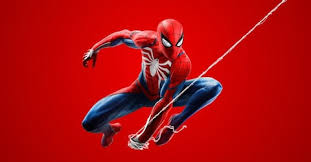

Marvel’s Spider-Man 2 rompe récords y emociona a los fans
Insomniac Games lo vuelve a lograr con Marvel’s Spider-Man 2, una secuela que mejora cada aspecto del juego original. Los jugadores pueden alternar entre Peter Parker y Miles Morales, cada uno con habilidades únicas y una historia que se entrelaza de forma cinematográfica.
Nueva York luce más viva que nunca, con un nivel de detalle impresionante y una fluidez que aprovecha el máximo rendimiento de PlayStation 5. El sistema de desplazamiento con telarañas fue completamente rediseñado, ofreciendo una sensación de velocidad y libertad sin precedentes.
Con una narrativa emocional, combates más dinámicos y villanos icónicos como Venom, Spider-Man 2 se posiciona como uno de los títulos más importantes del año.
⬅ Volver al inicio